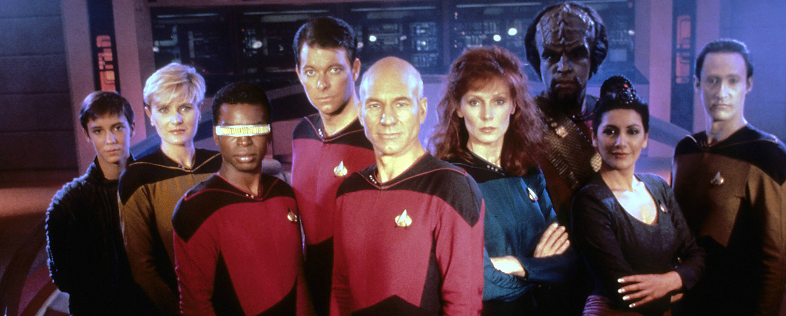

About
Star Trek: The Next Generation (abbreviated as TNG and ST:TNG) is an American science-fiction television series in the Star Trek franchise created by Gene Roddenberry that ran from 1987 to 1994.
The series follows the adventures of a space-faring crew on board the Galaxy Class starship USS Enterprise (NCC-1701-D). The series is set about 70 years after the final mission of the original Enterprise crew under the command of James T. Kirk. The Federation has undergone significant internal changes in its quest to explore and seek out new life, adding new degrees of complexity and controversy to its methods, especially those focused on the Prime Directive. The Klingon Empire and the United Federation of Planets have ceased wartime hostilities and become galactic allies, while more sinister foes such as the Romulans and the Borg take precedence on the series.
The Enterprise is commanded by Captain Jean-Luc Picard and is staffed by first officer Commander William Riker, second officer/operations manager Data, security chief Tasha Yar, ship's counselor Deanna Troi, chief medical officer Dr. Beverly Crusher and her son Wesley Crusher, conn officer Lieutenant Geordi La Forge, and junior officer Lieutenant Worf. The death of Lieutenant Yar in the twenty-third episode of the first season (1987-1988) of the series prompts an internal shuffle of personnel, making Worf official chief of security. In season two, La Forge is promoted to chief engineer and Katherine Pulaski briefly takes over for Beverly Crusher.